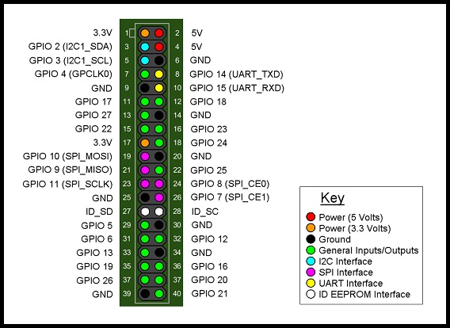
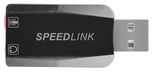

4.1 Hardware

Abbildung 11: Aufbau Raspberry Pi B+
Der verwendete Raspberry Pi B+ besitzt eine 40 Pin große Stiftleiste, welche mit 24 GPIOs, sowie diversen Masse- und Spannungspegeln belegt ist. Zusätzlich können über die Stiftleiste gängige Schnittstellen wie I2C, SPI und UART angesprochen werden. Mittels der GPIOs ist es möglich externe Signale einzulesen bzw. auszugeben. Um auf die GPIOs zuzugreifen kann beispielsweise die Programmbibliothek WiringPi verwendet werden. Diese bietet zahlreiche C-Bibliotheken, um die GPIOs gezielt mittels Bash- oder Software-Skripten anzusteuern bzw. auszulesen.

Abbildung 12: Belegung 40 Pin Stiftleiste
Versorgt wird der Raspberry Pi über einen Micro USB-Anschluss und ein zughöriges Netzteil (Input: 100-240V, 0.3A, 50/60Hz; Output: 5V, max. 2A). Für die bildgebende Ausgabe kann entweder ein LCD-Display über die DSI-Schnitt- stelle oder ein herkömmlicher Computermonitor über die HDMI-Schnittstelle angeschlos- sen werden.
Die Tonausgabe kann über den Composite-Ausgang (4-phasige Klinke, Video und Sound) oder HDMI-Ausgang erfolgen. Die entsprechenden Einstellungen müssen in der Systemkonfiguration vorgenommen werden. Da die Onboard-Soundkarte allerdings keinen Audioeingang besitzt, sowie eine relativ rauschbehaftete Audioausgabe, wurde auf eine externe USB-Soundkarte zurückgegriffen (Abbildung 13). Wie sich jedoch im weiteren Projektverlauf herausstellte, verfügen diese als „Stereo Soundkarten“ vertriebenen USB-Geräte zwar über eine Stereo Audioausgabe, allerdings nur über einen Mono Eingang. Exakte Erläuterungen hierzu, sowie Lösungsmöglichkeiten werden im Kapitel Fazit näher erläutert.

Abbildung 13: USB-Soundkarte SPEEDLINK Vigo
Die restlichen USB-Ports werden für Tastatur, Maus, sowie für Anschluss eines Datenträ- gers genutzt. Über einen Ethernet-Anschluss ist der Raspberry netzwerkfähig. Somit kön- nen via Internet Softwarepakete installiert oder der Raspberry über eine Remoteverbin- dung ferngesteuert werden.
Zum Schutz des Raspberry Pi wurde er in ein spezielles Plastikgehäuse eingebaut. Dieses wurde in unserem Projekt zusätzlich als modulare Einheit in die Stompbox verbaut.
Zusätzliches Zubehör: